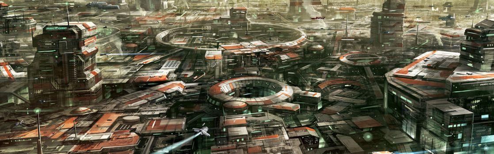

SYSTEM: STANTON

Excurs - System: Stanton
Auch ohne die unvermeidliche Einmischung der Menschen wäre das Stanton System eine Besonderheit. Die Vorteile einer weitläufigen grünen Zone und vier ungewöhnlich große und für Menschen nutzbare Biosphären, welche nur geringfügig terraformt werden mussten, machen das System aus kosmologischer Sicht außergewöhnlich. Sternensysteme wie Stanton, die vollständig besiedelt werden können, sind extrem selten. Dabei sind die voneinander abweichenden Umweltbedingungen auf den vier Welten des Systems für Wissenschaftler jeglicher Couleur von besonderem Interesse.
Niemand weiß genau, wann das Stanton System erstmals besiedelt wurde. Die vorhandenen Anhaltspunkte deuten darauf hin, dass es von einem selbstständigen Informationsmakler entdeckt wurde und dass sich die Informationen über den Standort und die möglichen Reichtümer des Systems sehr schnell verbreiteten. Die ersten Siedler ließen nicht lange auf sich warten. Als das UEE von der Existenz des Systems erfuhr, führte es eine Enteignung aller Bewohner durch, weil sie Zitat: „die sich in der Nähe befindlichen Sprungrouten sichern und ausbauen mussten“. Ohne offizielle Kolonisierungspapiere hatten die dort lebenden Siedler keine andere Möglichkeit als ihre Heimatstätten zu verlassen. Erzsucher, Überlebende und andere Besetzer hatten kaum Mittel zur Verfügung, um sich vor der Übermacht eines Großkampfschiffs der Bengal-Klasse zu schützen. Dann aber wusste das Empire nicht mehr weiter. Wie so oft war etwas haben zu wollen deutlich interessanter, als es wirklich zu besitzen.
Aufgrund der schlechten Wirtschaftslage während der hundertjährigen Kolonisierungsdürre konnte das UEE nur wenig Nutzen aus Stanton ziehen. Nachdem die UEE-Marineingenieure die kurzen Terraformingprozesse durchgeführt hatten, wurden eine Reihe unterfinanzierter militärischer Außenposten errichtet. Danach wurde Stanton auf Eis gelegt und zwar so lange, bis die Entscheidung getroffen wurde, das System Stück für Stück an den Höchstbietenden zu versteigern. Im Stillen wurden Megakonzerne kontaktiert und gefragt, ob sie Interesse daran hätten, ein Gebot für einen eigenen Planeten abzugeben. Die vier Gewinner haben für einen Geldsegen in Billionenhöhe für die UEE Wirtschaft gesorgt: Hurston Dynamics, Crusader Industries, ArcCorp und microTech. Es ist bemerkenswert einfallslos, dass die vier Welten heute Hurston, Crusader, ArcCorp und microTech heißen. Die Megakonzerne zogen langsam aber sicher auf ihre neu erworbenen Planeten um. Das gesamte System wurde dabei vollkommen industrialisiert. Die vier Welten sind jetzt übersäht von Fabriken, Firmenhauptquartieren, Testgeländen, Minen und anderen Firmengebäuden. Nur Mitarbeiter der Unternehmen, (oder jemand der dort Platz mietet, erhalten die Genehmigung, in die bewohnbaren Firmenstädte des Stanton Systems zu ziehen, um dort zu leben. Heute ist das Stanton System ein ausgezeichneter Ort für Reisende, die an Produkten interessiert sind, die von einigen der erfolgreichsten Unternehmen in der Galaxie hergestellt werden … oder für diejenigen, die glauben, beim Verkauf von Güter, welche diese Firmen benötigen, Gewinne erzielen zu können.

Niemand weiß genau, wann das Stanton System erstmals besiedelt wurde. Die vorhandenen Anhaltspunkte deuten darauf hin, dass es von einem selbstständigen Informationsmakler entdeckt wurde und dass sich die Informationen über den Standort und die möglichen Reichtümer des Systems sehr schnell verbreiteten. Die ersten Siedler ließen nicht lange auf sich warten. Als das UEE von der Existenz des Systems erfuhr, führte es eine Enteignung aller Bewohner durch, weil sie Zitat: „die sich in der Nähe befindlichen Sprungrouten sichern und ausbauen mussten“. Ohne offizielle Kolonisierungspapiere hatten die dort lebenden Siedler keine andere Möglichkeit als ihre Heimatstätten zu verlassen. Erzsucher, Überlebende und andere Besetzer hatten kaum Mittel zur Verfügung, um sich vor der Übermacht eines Großkampfschiffs der Bengal-Klasse zu schützen. Dann aber wusste das Empire nicht mehr weiter. Wie so oft war etwas haben zu wollen deutlich interessanter, als es wirklich zu besitzen.
Aufgrund der schlechten Wirtschaftslage während der hundertjährigen Kolonisierungsdürre konnte das UEE nur wenig Nutzen aus Stanton ziehen. Nachdem die UEE-Marineingenieure die kurzen Terraformingprozesse durchgeführt hatten, wurden eine Reihe unterfinanzierter militärischer Außenposten errichtet. Danach wurde Stanton auf Eis gelegt und zwar so lange, bis die Entscheidung getroffen wurde, das System Stück für Stück an den Höchstbietenden zu versteigern. Im Stillen wurden Megakonzerne kontaktiert und gefragt, ob sie Interesse daran hätten, ein Gebot für einen eigenen Planeten abzugeben. Die vier Gewinner haben für einen Geldsegen in Billionenhöhe für die UEE Wirtschaft gesorgt: Hurston Dynamics, Crusader Industries, ArcCorp und microTech. Es ist bemerkenswert einfallslos, dass die vier Welten heute Hurston, Crusader, ArcCorp und microTech heißen. Die Megakonzerne zogen langsam aber sicher auf ihre neu erworbenen Planeten um. Das gesamte System wurde dabei vollkommen industrialisiert. Die vier Welten sind jetzt übersäht von Fabriken, Firmenhauptquartieren, Testgeländen, Minen und anderen Firmengebäuden. Nur Mitarbeiter der Unternehmen, (oder jemand der dort Platz mietet, erhalten die Genehmigung, in die bewohnbaren Firmenstädte des Stanton Systems zu ziehen, um dort zu leben. Heute ist das Stanton System ein ausgezeichneter Ort für Reisende, die an Produkten interessiert sind, die von einigen der erfolgreichsten Unternehmen in der Galaxie hergestellt werden … oder für diejenigen, die glauben, beim Verkauf von Güter, welche diese Firmen benötigen, Gewinne erzielen zu können.
Hurston
dient Hurston Dynamics als Heimat, einem aristokratischen, familiengeführten Waffenhersteller, der diese Welt hat ausbluten lassen. Die Atmosphäre des Planeten wurde aufgrund der Bergbau- und Herstellungsprozesse weitgehend zerstört und dabei auch fast alles einheimische Leben ausgelöscht. Hurston baut eine Reihe verlässlicher Waffen. Piloten, die nach speziellen Waffen suchen, dürften hier fündig werden. Der Planet produziert auch vielfältige Munition, die an andere Firmen verkauft wird. Die Unterstützung solcher Munitionstransporte wird immer gut vergütet. Arbeiter werden für die jahrelangen Fabrik- und Minenverträge „importiert“. Nur wenige entscheiden sich anschließend für eine Vertragsverlängerung. Hurston benötigt immerzu einen Strom von Billiglöhnern und ist eine gute Anlaufstelle, um Antimaterie als Grundstoff zu verkaufen.Crusader
Crusader ist Stanton II, das von den Einheimischen auch „CI“ (Crusader Industries) genannt wird. Es ist ein Gasgigant mit geringer Masse, in dessen Atmosphäre zumindest in großen Höhen geatmet werden kann. Um diese Gegebenheit zu nutzen, wurde der Planet zur Heimat eines militärischkonstruierten Gitters aus bewohnbaren, schwebenden Plattformen. Diese Plattformen stellten sich für Crusader als ideal heraus, da ihre großflächigen kommerziellen Transportschiffe normalerweise außerhalb der Atmosphäre gebaut werden müssen. Durch die Konstruktion unter freiem Himmel konnten die Kosten für diese Schiffe um fast 40 Prozent gesenkt werden. Die Ersparnis wird häufig auch an die Konsumenten weitergegeben. Als Crusader Industries die Führung übernahm, wurden diese Plattformen soweit ausgebaut, dass sie ihren Ansprüchen genügten. Die Firma baute zusätzlich qualitativ hochwertige Wohnungen für ihre Angestellten, die in das Gitternetz selbst eingewoben sind. Der Teil der Welt, welcher für Besucher zugänglich ist, wird von vielen als einer der schönsten Häfen des Systems bezeichnet. Die Schiffswerften selbst sind schaurig-schön, mit großen Transportschiffen, die in der mittleren Atmosphäre schweben und von einem leuchtenden Band aus Crusader sFabriken umgeben sind.ArcCorp
ArcCorp, Stanton III, ist heute eine optisch sehr beeindruckende Welt. Während die anderen Planeten, selbst das verschmutzte Hurston, noch einige Andeutungen auf ihren natürlichen Ursprung behalten haben, ist ArcCorp eine nahezu komplett neukonstruierte Welt. Fast jedes Stückchen Erde wurde neu geformt, abgegrenzt und darauf aufgebaut. Dabei blieb nur wenig Platz für die Natur übrig. ArcCorp stellt in großen Mengen Fusionstriebwerke für jährlich hunderttausende ziviler Raumschiffe her. Ankommenden Händlern wird mitgeteilt, dass sie neben Geschäften für diese Triebwerke natürlich auch alles Andere auf dem Planeten finden können. ArcCorp macht absolut keine Unterschiede, wem sie Land oder Gebäude verpachten. Hunderte kleinere Firmen haben sich auf diesem Planeten in der Nähe der nördlichen Polarregion ein neues Zuhause gesucht. Anthropologen, die mit den Xi’An vertraut sind, haben postuliert, dass ArcCorp am ehesten als Äquivalent einer Fabrikwelt der Xi’An gesehen werden kann. Viele sagen voraus, dass unsere Zivilisation sich eines Tages in die gleiche Richtung entwickeln wird.MicroTech
oder Stanton IV, ist die Heimat der microTech Corporation, ist ein großer und im Allgemeinen kalter Planet. Die niedrigen Temperaturen sind das Ergebnis eines Fehlers während des Terraforming-Prozesses des UEE, der zu einer ungewöhnlich dichten Wolkenbildung führte. Der Planet ist microTechs Produktionsstätte des mobiGlas, einem Stück digitaler Hilfstechnologie, das wohl so gut wie jeder im Empire nutzt. Obwohl sich das mobiGlas zu ihrem omnipräsenten Produkt entwickelt hat, stellt microTech tatsächlich eine große Vielfalt elektronischer Geräte her, inklusive zahlreicher Schiffssysteme. Diese Welt ist ein guter Startpunkt, um nach fortgeschrittener Sensortechnologie zu suchen, die für den entscheidenden Vorteil während eines Dogfights sorgen könnte. Es werden auch Parzellen an kleinere Firmen verpachtet, sogar an einige Mitwerber von mircoTech, wodurch sich der Ruf des Planeten als Ort für innovative technologische Forschung und Entwicklung gefestigt hat. Firmenaufkäufe erfolgreicher Startups von Stanton IV sind allgemein üblich. Besuchern auf der Suche nach Arbeit und Frachtnews wird Wallys Bar empfohlen. Aber fragt nur nicht nach Wally ...